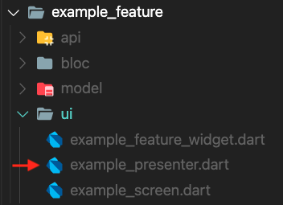

- Feature Widget : Creates
BLoCand associated a Presenter to theBLoC - Presenter : Creates Screen based on
BuildContext,BLoC, andViewModel - Screen : The actual UI widget being present for the specific Use Case and This is where the view model will map the data to the UI

Feature Widget is a StatelessWidget that describes the feature user interface by initializing the BLoc and associate a presenter to the BLoC.
class ExampleWidget extends StatelessWidget {
@override
Widget build(BuildContext context) {
return BlocProvider<ExampleBloc>(
create: (_) => ExampleBloc(),
child: ExamplePresenter(),
);
}
}

Presenter creates three states of the screen such as Loading Screen, Error Screen, and Screen also manages all screen actions.
class ExamplePresenter extends Presenter<ExampleBloc, ExampleViewModel, ExampleScreen> {
@override
Stream<DepositCheckCardViewModel> getViewModelStream (ExampleBloc bloc) {...
@override
Widget buildLoadingScreen(BuildContext context) {...
@override
Widget buildErrorScreen(BuildContext context, Object? error) {...
@override
ExampleScreen buildScreen(BuildContext context, ExampleBloc bloc, ExampleViewModel viewModel) {...
}
getViewModelStreammethod handlesViewModelchanges withBLoclistener.buildLoadingScreenmethod creates the loading screen.buildErrorScreenmethod creates the error screen.buildScreenmethod creates the screen by passing the associatedViewModel.
@override
DepositCheckCardScreen buildScreen(BuildContext context,
ExampleBloc bloc, ExampleViewModel viewModel) {
return ExampleScreen(
viewModel: viewModel,
pressenterActions: ExamplePressenterActions(),
);
}
class ExamplePressenterActions {
ExamplePressenterActions();
navigateToDetail(BuildContext context) {
Navigator.of(context).pushNamed(Router.detailRoute);
}
}

Screen or UI widget presents the specific Use Case base on ViewModel.
class ExampleScreen extends Screen {
final ExampleViewModel viewModel;
final ExamplePressenterActions pressenterActions;
ExampleScreen(
{required this.viewModel, required this.pressenterActions});
@override
Widget build(BuildContext context) {...
}
- Add the flutter_test dependency.
- Create a widget to test.
- Create a
testWidgetstest. - Build the widget using the
WidgetTester. - Search for the widget using a
Finder. - Verify the widget using a
Matcher.
The purpose of this test is to ensure every interaction the user makes produces the expected result.
Most common finder method:
find.byKey(): Finds widgets by searching for one with a particular [Key].find.byType(): Finds widgets by searching for widgets with a particular type.find.text(): Finds [Text] and [EditableText] widgets containing string equal to the text argument.
Testing TextField:
tester.enterText(Finder finder, String text): Give the text input widget specified by [finder] the focus and enter [text] as if it been provided by the onscreen keyboard.
Testing Button Action:
tester.tap(Finder finder): Dispatch a pointer down / pointer up sequence at the center of the given widget, assuming it is exposed.
This test should verify the appearance of all screen object
- create a
MaterialAppobject - pumpWidget calls runApp, and also triggers a frame to paint the app.
await tester.pumpWidget(testWidget); - Find
ExamplePresenterwidgetfinal finder = find.byType(ExamplePresenter); - Expect to find one widget
expect(finder, findsOneWidget);
MaterialApp testWidget = MaterialApp(
home: BlocProvider<ExampleBlockMock>(
create: (_) => ExampleBlockMock(),
child: ExamplePresenter(),
),
);
- Test should verify back button action on the screen
- create a
MockPressenterActionto cover presenter actions
- create a
class MockPressenterAction extends Mock implements ExamplePressenterActions {}
- create a
ExampleViewModeland pass to screen - create a
MaterialAppobject
MaterialApp testWidget = MaterialApp(
home: ExampleScreen(
viewModel: exampleViewModel,
pressenterAction: mockPressenterAction),
);
pumpWidgetcalls runApp, and also triggers a frame to paint the app.await tester.pumpWidget(testWidget);- Find back button
final finder = find.byKey(Key('Back-Button'));; - Tap on back button
await tester.tap(finder); - Verify that a method on a mock object was called with the given arguments.
verify(mockPressenterAction.popNavigationListener(any)).called(1);